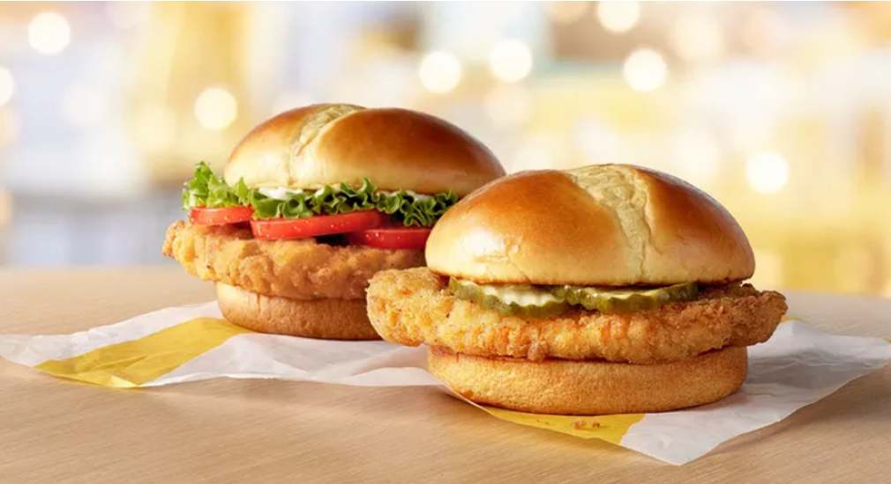
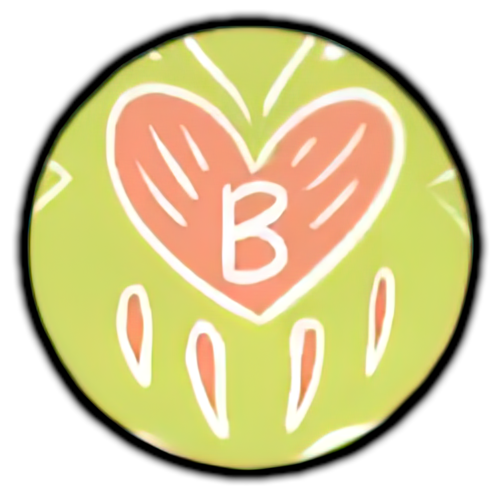

channel
of shit
Республиканец из Теннесси приносит извинения за то,
что поставил семью в неловкое положение,
лайкнув почти обнаженные
фото гей-модели в Instagram
Женщина из Кентукки, у которой более 230 праправнуков, встречает прапраправнука: смотрите фото
Тренер группы поддержки из Оклахомы, которая занималась сексом со студенткой 300 раз
Мета изучает новую социальную сеть, чтобы конкурировать
с Twitter

Антикапиталистический мем, сравнивающий бутерброды
с курицей в фаст-фуде,
имеет массовые неприятные последствия
Победитель лотереи California Powerball купил
особняк на Голливудских холмах
за 22,5 миллиона долларов: отчеты
Паулина Поризкова обвинила интернет-троллей
в комментариях к ее фото в нижнем белье
Лиззо раскритиковали за вирусный шторм
в твиттере против «расистов», «трансфобов» и «жирофобов»
Мужчина кричит на девушку, чтобы она
«блядь перестань есть», а она обвиняет его в «позоре»
Мальчик из Канзаса нашел редкого розового
кузнечика во время охоты на жуков
во дворе своей семьи.
Жизель Бюндхен показывает Тому Брэди,
чего ему не хватает в сексуальном танце на пилоне
Пользователи Reddit раскритиковали женщину,
которая убежала с ужина из-за
отсутствия веганских блюд: «Грубая и тупая»
Звезда «Далласа» Шарлин Тилтон говорит,
что никогда не чувствовала себя «красивой»
в роли секс-символа 1980-х.
